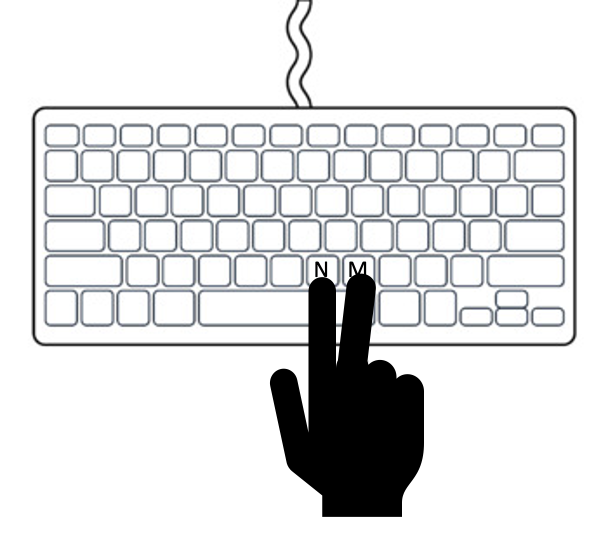

<!DOCTYPE html>
<html>
    <head>
        <title>My experiment</title>
        <!-- import jsPsych library, import plug-ins, import jsPsych stylesheet -->
        <script src="jspsych-6.3.1/jspsych.js"></script>
        <script src="jspsych-6.3.1/plugins/jspsych-html-keyboard-response.js"></script>
        <script src="jspsych-6.3.1/plugins/jspsych-image-keyboard-response.js"></script>
        <script src="jspsych-6.3.1/plugins/jspsych-canvas-keyboard-response.js"></script>
        <script src="jspsych-6.3.1/plugins/jspsych-canvas-button-response.js"></script>
        <script src="jspsych-6.3.1/plugins/jspsych-virtual-chinrest.js"></script>
        <script src="jspsych-6.3.1/plugins/jspsych-preload.js"></script>
        <link href="jspsych-6.3.1/css/jspsych.css" rel="stylesheet" type="text/css">

        <!-- SVG.js -->
        <script src="https://cdnjs.cloudflare.com/ajax/libs/svg.js/2.6.3/svg.min.js"></script>

        <style>
            * {
              box-sizing: border-box;
            }
            
            .img-container {
              float: left;
              width: 25%;
              padding: 2px;
            }
            
            .clearfix::after {
              content: "";
              clear: both;
              display: table;
            }

            div.center {
                margin-left: auto;
                margin-right: auto;
                display: table;
            }
            ul {
                text-align: left;
            }
            ol {
                text-align: left;
            }
        </style>
    </head>
    <body>
    </body>
    <script>

        /* create timeline */
        var timeline = [];
        
        /* create timeline for instructions pages */
        var instruction_timeline = [];

        /* define welcome message trial */
        var welcome = {
          type: "html-keyboard-response",
          stimulus: "Welcome to the experiment. Press any key to begin."
        };
        instruction_timeline.push(welcome);
            
        /* define instructions trial */
        // STUDY BEGIN SCREEN - introduction to task
        var instruction_page_1 = {
          type: "html-keyboard-response",
          stimulus: `
            <div style='width: 800px;'>
            <div>
                In this study you will complete a simple visual detection task: 
                We will ask you to fixate the center of the screen marked with a 
                fixation dot. While you fixate the center two images or symbols 
                will briefly appear next to the fixation dot. You task is to 
                indicate as fast as you can whether the two presented images are 
                the <span style="color:red;"> same </span> (i.e. MATCH) or 
                <span style="color:red;"> different </span> (i.e. NOT MATCH) with a 
                keyboard press. <br><br>

                IMPORTANT: While you determine a MATCH/MISMATCH, it is important 
                that you keep fixating the center! <br><br>

                Below you see three examples of the task. Note that the two images can 
                be on the same side (example 1 and 2) or on different sides of the 
                fixation dot (example 3 and 4). <br><br>

                <div class="clearfix">
                    <div class="img-container">
                        <div> <b> EXAMPLE 1 </b> </div>
                        
                    </div>
                    <div class="img-container">
                        <div> <b> EXAMPLE 2 </b> </div>
                        
                    </div>
                    <div class="img-container">
                        <div> <b> EXAMPLE 3 </b>  </div>
                        
                    </div>
                    <div class="img-container">
                        <div><b> EXAMPLE 4 </b> </div>
                        
                    </div>
                </div>
            </div>
            <div style='width: 700px;'>
            <p>PRESS SPACEBAR TO MOVE TO THE NEXT PAGE</p>
          `,
          choices: [" "],
          post_trial_gap: 100
        };
        instruction_timeline.push(instruction_page_1);

        var instruction_page_2 = {
          type: "html-keyboard-response",
          stimulus: `
            <div style='width: 800px;'>
            <div>
                Responses must always be provided by one hand using the index 
                and middle finger.
            
                On some blocks we will ask you to respond with your left hand, 
                on other blocks we will ask you to respond with your right hand. 
                We will tell you which hand to use before each block. <br><br>

                <div style='width: 1100px;'>
                <div>
                    <p style="float: right;"></p> <br>
                    <p>
                        <span style="color:red;"><b>RIGHT HAND</b> <br></span>
                        When responding with your <b>RIGHT</b> hand press: <br>
                        <b>‘N’</b> for <b>‘NO MATCH’</b> with your <b>INDEX</b>  finger and <br>
                        <b>‘M’</b>  for <b>‘MATCH’</b> with your <b>MIDDLE</b> finger.  
                    </p>

                    <p style="float: right;"></p> <br>
                    <p>
                        <span style="color:red;"><b>LEFT HAND</b> <br></span>
                        When responding with your <b>LEFT</b> hand press: <br>
                        <b>‘N’</b> for <b>‘NO MATCH’</b> with your <b>MIDDLE</b> finger and <br>
                        <b>‘M’</b>  for <b>‘MATCH’</b> with your <b>INDEX</b> finger.  
                    </p>
                </div>
                <br><br>

                PRESS SPACEBAR TO MOVE TO THE NEXT PAGE

            </div>
          `,
          choices: [" "],
          post_trial_gap: 100
        };
        instruction_timeline.push(instruction_page_2);

        var instruction_page_8 = {
          type: "html-keyboard-response",
          stimulus: `
            <div style='width: 700px;'>
            <div>
            In between rounds of the MATCH/ MISMATCH task, the fixation dot in the 
            center of the screen will sometimes change its color from black to 
            <span style="color:orange;"><b>ORANGE</b></span> for a very brief moment. When you detect that the fixation 
            dot turned <span style="color:orange;"><b>ORANGE</b></span>, indicate this change as fast as possible by 
            pressing the <b>SPACEBAR</b>. <br><br>

            <b>EXAMPLE IMAGE COLOR CHANGE </b> <br><br>
            <p></p>

            Remember, it is important that you keep fixating the center of the screen throughout an entire block! <br><br>

            Second, try to keep your index and middle finger on the N and M keys! <br><br>

            Between blocks you can take breaks, rest and move your eyes, and move your fingers. <br><br>

            PRESS SPACEBAR TO MOVE TO THE NEXT PAGE
          `,
          choices: [" "],
          post_trial_gap: 100
        };
        instruction_timeline.push(instruction_page_8);

        var instruction_page_9 = {
          type: "html-keyboard-response",
          stimulus: `
            <div style='width: 700px;'>
            <div>
                Before you start the task, we have to make sure that the images 
                have the correct size on your screen. To ensure this, we will 
                show you an image of a standard credit card. Adapt the browser-
                window size so that this image matches the size of a real credit card. <br><br>

                Please get a real credit or debit card, hold it to the screen 
                and adapt the browser window size until the image matches the 
                size of the real card. 
                <br><br>

            <b>CREDIT CARD SAMPLE IMAGE </b> <br><br>
            <p></p>

            PRESS SPACEBAR TO MOVE TO THE NEXT PAGE
          `,
          choices: [" "],
          post_trial_gap: 100
        };
        //timeline.push(instruction_page_9);

        var instruction_page_10 = {
          type: "html-keyboard-response",
          stimulus: `
            <div style='width: 700px;'>
            <div>
                Second we  have to make sure that you have the correct distance 
                from the screen. When the screen-centering process begins, <br>

            <p style="text-align:left";">
            <ol>
                <li>Center yourself in front of your screen. </li>
                <li>Put your left hand on the space bar. </li>
                <li>Cover your right eye with your right hand. </li>
                <li>Using your left eye, focus on the black square. Keep your focus on the black square.
                The red ball will disappear as it moves from right to left. 
                Press the space bar as soon as the ball disappears. </li>
            </ol>
            </p>

            PRESS SPACEBAR TO MOVE TO THE NEXT PAGE
            </div>
          `,
          choices: [" "],
          post_trial_gap: 100
        };
        //timeline.push(instruction_page_10);

        
        var instruction_page_12 = {
            type: "html-keyboard-response",
          stimulus: `
            <div style='width: 700px;'>
            <div>
                Short recap: <br>
            <ul>
                <li>Try to fixate the fixation to in the center of the screen throughout the entire block</li>
                <li>Press ’M’ for two matching images next to the fixation dot and “N’’ for non-matching images</li>
                <li>Try to respond as fast as possible</li>
                <li>Use the index and middle finger of one hand to make these responses. 
                Which hand will be instructed at the beginning of each block</li>
                <li>When the fixation dot briefly flashes orange press the SPACEBAR as fast as possible<br>
                <li>Stay centered with respect to the screen</li>
                <li>Try to keep your distance to the screen constant.</li>
            </ul>
            <div style='width: 700px;'>
            You are now ready to begin the task.
            <p>PRESS SPACEBAR TO BEGIN THE SETUP</p>
            </div>
          `,
          choices: [" "],
          post_trial_gap: 100
        }
        instruction_timeline.push(instruction_page_12); 

    
        var instructions = {
            timeline: instruction_timeline
        }; 

        timeline.push(instructions); 

        /* create timeline for blocks/trials */
        var block_timeline = []; 

        // BLOCK BEGIN SCREEN
        // text stating which hand to use for response and showing diagram for
        // that hand; reminder about attention trials
        var block_begin_screen = {
          type: "html-keyboard-response",
          stimulus: `
            <div style='width: 700px;'>
            <div>In this study, you will focus your gaze on a white plus-sign (+) 
                at the middle of the screen, while two images are flashed briefly 
                to the side of the plus sign. Your task is to indicate if the 
                images are a match (M) or not a match (N) by making a keypress 
                as rapidly as possible. The study includes several blocks of 
                multiple test items (trials). 

                Responses must always be provided by one hand using the fingers 
                shown below. With your right hand, press ‘N’ (no match) with your 
                index finger and press ‘M’ (match) with your middle finger.  
                With your left hand, press ‘N’ with your middle finger and ‘M’ 
                with your index finger.  At the beginning of each block, you 
                will be told which hand to use for responding in that block.  <br><br>

                <p></p>

                Throughout each trial, you must keep your gaze focused on the plus 
                sign in the middle of the screen. <br><br>
                
                On some trials, the plus sign that you are focusing on will be orange. When the plus sign is 
                orange, you must not respond to that trial. 
          `,
          post_trial_gap: 100
        };
        block_timeline.push(block_begin_screen);

        // SET-UP VIEWING DISTANCE SCREEN
        // set up viewing distance to achieve viewing angle and stimulus size
        
        // two blindspot measurements
        // measure px2mm, viewing distance and px2deg
        // do not resize the jsPsych content after this trial
        // resize to cm (50 pixels per unit)
        // measure px2mm, but not viewing distance and px2deg (because blindspot_reps is 0)
        // note: you may still choose to estimate viewing distance even if resizing to cm or inches
        var pixels_per_deg = 50; // may need to copy this up as well
        
        let cm_resize = {
            type: "virtual-chinrest",
            blindspot_reps: 3,
            resize_units: "deg",
            pixels_per_unit: 50,
        };
        block_timeline.push(cm_resize)
        
        var block_begin_screen_2 = {
          type: "html-keyboard-response",
          stimulus: `
            <div style='width: 700px;'>
            <div>For the next block of trials, please respond with your Left hand, 
                using the fingers shown below.

                <p></p>

                OR <br><br>

                For the next block of trials, please respond with your Right hand, 
                using the fingers shown here.

                <p></p>

                Remember, when the plus sign is orange, do not respond to that trial. 

            </div>
            <div style='width: 700px;'>
            <p>Press the key under your middle finger. </p>
          `,
          choices: ["m", "n"], // collect handedness here. 
          post_trial_gap: 100
        };
        block_timeline.push(block_begin_screen_2);

        var block_begin_screen_3 = {
            type: "html-keyboard-response",
          stimulus: `
            <div style='width: 700px;'>
            <div>
                Short recap: <br>
            <ul>
                <li>Try to fixate the fixation to in the center of the screen throughout the entire block</li>
                <li>Press ’M’ for two matching images next to the fixation dot and “N’’ for non-matching images</li>
                <li>Try to respond as fast as possible</li>
                <li>Use the index and middle finger of one hand to make these responses. 
                Which hand will be instructed at the beginning of each block</li>
                <li>When the fixation dot briefly flashes orange press the SPACEBAR as fast as possible<br>
                <li>Stay centered with respect to the screen</li>
                <li>Try to keep your distance to the screen constant.</li>
            </ul>
            <div style='width: 700px;'>
            You are now ready to begin the task.
            <p>PRESS SPACEBAR TO BEGIN THE SAMPLE TRIALS</p>
            </div>
          `,
          choices: [" "],
          post_trial_gap: 100
        };
        block_timeline.push(block_begin_screen_3);

        /* Verifying that the hand is placed correctly */
       /* Variables of the frame rectangle */
       var lineWidth = 3;
        var height_to_width_ratio = 5/6;
        var width = 490;
        var height = height_to_width_ratio * width;

        /* Helper function for drawing the frame rectangle */
        function drawRect(ctx){
            ctx.lineWidth = lineWidth;
            ctx.beginPath();
            ctx.rect(ctx.lineWidth, ctx.lineWidth, width - ctx.lineWidth, 
                height - ctx.lineWidth);
            ctx.stroke();
        }

        /* Helper function for drawing dot in center of frame */
        function drawCenterDot(ctx, color="black") {
            ctx.strokeStyle = color;
            ctx.beginPath();
            radius = 2;
            ctx.arc(width / 2, height / 2, radius, 0, 2 * Math.PI);
            ctx.stroke();
        }

        /* Helper function for drawing an image at a location */
        function drawImageOnCanvas(ctx, img_path, img_x, img_y, img_width, img_height) {
            var img = new Image();
            img.onload = function () {
                /* Draw the fixation symbol in the center of the frame */
                ctx.drawImage(img, img_x, img_y, img_width, img_height);
            }
            img.src = img_path;
        }

        /* Method for drawing fixation frame */
        function drawFixationFrame(frameType, symbol, color = 'black'){
            /* Function for attention check */
            var attn_check_function = function drawStringFrame(c) {
                var ctx = c.getContext('2d');
                drawRect(ctx);
                /* Draw the symbol in the center */
                ctx.beginPath();
                radius = 5;
                ctx.fillStyle = color;
                ctx.arc(width / 2, height / 2, radius, 0, 2 * Math.PI, true);
                ctx.closePath();
                ctx.fill();
            }

            /* Function for drawing dot in the frame */
            var dot_frame_function = function drawStringFrame(c) {
                var ctx = c.getContext('2d');

                drawRect(ctx);
                /* Draw the symbol in the center */
                ctx.strokeStyle = color;
                drawCenterDot(ctx, color);
            }

            /* Function for drawing text in the frame */
            var string_frame_function = function drawStringFrame(c) {
                var ctx = c.getContext('2d');
                drawRect(ctx);
                /* Draw the symbol in the center */
                var sym_x = width / 2;
                var sym_y = height / 2;
                var font_size = 20;
                var text_font = font_size + 'px sans-serif';
                ctx.font = text_font;
                ctx.fillStyle = color;
                ctx.fillText(symbol, sym_x, sym_y);
            }

            /* Function for drawing image in the frame */
            var image_frame_function = function drawImageFrame(c) {
                var ctx = c.getContext('2d');
                drawRect(ctx);
                /* Draw the symbol in the center */
                var fixation_dim = 1/15 * width; /* fixation symbol width and height */
                var img_path = symbol;
                var img_x = width / 2 - fixation_dim / 2;
                var img_y = height / 2 - fixation_dim / 2;
                var img_width = fixation_dim;
                var img_height = fixation_dim;
                drawImageOnCanvas(ctx, img_path, img_x, img_y, img_width, img_height)
            }

            switch (frameType) {
                case "string":
                    return string_frame_function;
                    break;
                case "image":
                    return image_frame_function;
                    break;
                case "dot":
                    return dot_frame_function
                    break;
                case "attn_check":
                    return attn_check_function
            }
        }

        /* Variables of symbols on the frame */
        /* Based on pixels per degree, want 
           Letter locations -  2o, 19’ of visual angle to the right and 
           left of the fixation, and 1o, 56’ above and below the fixation. 
           Stimulus letters are approximately 27’ of visual angle tall at the 
           viewing distance.
           */
        left_right_deg = 2.0 + 19.0 / 60.0;
        up_down_deg = 1.0 + 56.0 / 60.0
        lower_left_x = width / 2 - pixels_per_deg * left_right_deg;
        lower_left_y = height / 2 + pixels_per_deg * up_down_deg;
        upper_right_x = width / 2 + pixels_per_deg * left_right_deg;
        upper_right_y = height / 2 - pixels_per_deg * up_down_deg;

        lower_right_x = upper_right_x;
        lower_right_y = lower_left_y;
        upper_left_x = lower_left_x;
        upper_left_y = upper_right_y;

        /* General method for drawing a frame with two symbols inside of it.
           Takes the canvas,
                     frame type -- string of "string" or "image"
                     symbol1 -- first symbol (may be string or image path)
                     symbol2 -- second symbol (may be string or image path) 
                     loc1 -- string of "ll", "ul", "lr", "ur" 
                     loc2 -- same as loc1, but for symbol2 */
        function drawSymbolsFrame(frameType, symbol1, symbol2, loc1, loc2, color = 'black') {
            var sym1_x = 0;
            var sym1_y = 0;
            var sym2_x = 0;
            var sym2_y = 0;

            /* Switch statements to get xy coordinates of symbols */
            switch(loc1) {
                case "ll":
                    sym1_x = lower_left_x;
                    sym1_y = lower_left_y;
                    break;
                case "ul":
                    sym1_x = upper_left_x;
                    sym1_y = upper_left_y;
                    break;
                case "lr":
                    sym1_x = lower_right_x;
                    sym1_y = lower_right_y;
                    break;
                case "ur":
                    sym1_x = upper_right_x;
                    sym1_y = upper_right_y;
            } 

            
            switch(loc2) {
                case "ll":
                    sym2_x = lower_left_x;
                    sym2_y = lower_left_y;
                    break;
                case "ul":
                    sym2_x = upper_left_x;
                    sym2_y = upper_left_y;
                    break;
                case "lr":
                    sym2_x = lower_right_x;
                    sym2_y = lower_right_y;
                    break;
                case "ur":
                    sym2_x = upper_right_x;
                    sym2_y = upper_right_y;
            } 

            /* Function for drawing two strings in the frame */
            var string_frame_function = function drawStringFrame(c) {
                var ctx = c.getContext('2d');

                drawRect(ctx);
                drawCenterDot(ctx, color);
                /* Draw the strings on the canvas */
                var font_size = pixels_per_deg * 27.0 / 60.0;
                var text_font = font_size + 'px sans-serif';
                ctx.font = text_font;
                ctx.fillText(symbol1, sym1_x - font_size / 2, sym1_y - font_size / 2);
                ctx.fillText(symbol2, sym2_x, sym2_y);
            }

            /* Function for drawing two images in the frame */
            var image_frame_function = function drawImageFrame(c) {
                var ctx = c.getContext('2d');
                drawRect(ctx);
                drawCenterDot(ctx, color);
                /* Draw the first symbol */
                var img_path = symbol1;
                var symbol_dim = pixels_per_deg * 27.0 / 60.0;
                var img_x = sym1_x - symbol_dim / 2;
                var img_y = sym1_y - symbol_dim / 2;
                var img_width = symbol_dim;
                var img_height = symbol_dim;
                drawImageOnCanvas(ctx, img_path, img_x, img_y, img_width, img_height)
                /* Draw the second symbol */
                var img_path = symbol2;
                var img_x = sym2_x - symbol_dim / 2;
                var img_y = sym2_y - symbol_dim / 2;
                drawImageOnCanvas(ctx, img_path, img_x, img_y, img_width, img_height)
            }

            if (frameType === "string") {
                return string_frame_function;
            }
            else if (frameType === "image") {
                return image_frame_function;
            }
        }

        var fixation_box = {
            type: "canvas-keyboard-response",
            stimulus: drawFixationFrame("image", 'img/fixation_cross_hair_bulls_eye.jpg'),
            choices: jsPsych.NO_KEYS,
            trial_duration: 100,
            data: {
                task: 'fixation',
            }
        }

        var ready_box = {
            type: "canvas-keyboard-response",
            stimulus: drawFixationFrame("dot", ""),
            choices: jsPsych.NO_KEYS,
            trial_duration: 2 * 1000,
            data: {
                task: 'ready',
            }
        }

        var wait_box = {
            type: "canvas-keyboard-response",
            stimulus: drawFixationFrame("dot", ""),
            choices: jsPsych.NO_KEYS,
            trial_duration: 0.5 * 1000,
            data: {
                task: 'wait',
            }
        }

        var inter_trial = {
            type: "canvas-keyboard-response",
            stimulus: drawFixationFrame("dot", ""),
            choices: jsPsych.NO_KEYS,
            trial_duration: 2 * 1000,
            data: {
                task: 'inter_trial',
            }
        }
    
        /* Create the test stimuli */
        var test_stimuli = [];

        Letters = ["A", "B", "C", "D", "E", "F", "G"];
        Symbols = ["!", "@", "#", "$", "%", "&"];

        /* Add 4 attention checks with random colors */
        function attention_check(arr, loc1, loc2) {
            for (var i = 0; i < 4; i++) {
                random_idx = Math.floor(Math.random() * arr.length);
                letterUpper = arr[random_idx];
                letterLower = arr[(random_idx + 2) % arr.length].toLowerCase();
                stimulus_function = drawSymbolsFrame("string", letterUpper, letterLower, loc1, loc2, "orange");
                stimulus_dict = {stimulus: stimulus_function, choices: ['m', 'n', ' '], correct_response: " "};
                test_stimuli.push(stimulus_dict);
            }
        }

        attention_check(Letters, 'll', 'lr');

        /* Matching Letters */
        function matching(loc1, loc2, arrLength) {
            for (var i = 0; i < arrLength; i++) {
                random_letter_idx = Math.floor(Math.random() * Letters.length);
                letterUpper = Letters[random_letter_idx];
                letterLower = letterUpper.toLowerCase();
                stimulus_function = drawSymbolsFrame("string", letterUpper, letterLower, loc1, loc2);
                stimulus_dict = {stimulus: stimulus_function, choices: ['m', 'n'], correct_response: 'm'};
                test_stimuli.push(stimulus_dict);
            }
        }

        /* NonMatching Letters */
        function nonMatching(loc1, loc2, arrLength) {
            for (var i = 0; i < arrLength; i++) {
                random_letter_idx = Math.floor(Math.random() * Letters.length);
                letterUpper = Letters[random_letter_idx];
                letterLower = Letters[(random_letter_idx + 2) % arrLength].toLowerCase();
                stimulus_function = drawSymbolsFrame("string", letterUpper, letterLower, loc1, loc2);
                stimulus_dict = {stimulus: stimulus_function, choices: ['m', 'n'], correct_response: 'n'};
                test_stimuli.push(stimulus_dict);
            }
        }


        /* 48 TRIALS*/
        /* Matching bilaterial lower (3) */
        matching('ll', 'lr', 3);
        /* Nonmatching bilaterial lower (3) */
        nonMatching('ll', 'lr', 3);
        /* Matching bilaterial upper (3) */
        matching('ul', 'ur', 3);
        /* Nonmatching bilaterial upper (3) */
        nonMatching('ul', 'ur', 3);
        /* Matching unilaterial left (6) */
        matching('ll', 'ul', 6);
        /* Nonmatching unilaterial left (6) */
        nonMatching('ll', 'ul', 6);
        /* Matching unilaterial right (6) */
        matching('lr', 'ur', 6);
        /* Nonmatching unilaterial right (6) */
        nonMatching('lr', 'ur', 6);
        /* Matching upper-right-lower-left (3) */
        matching('ur', 'll', 3);
        /* Nonmatching upper-right-lower-left (3) */
        nonMatching('ur', 'll', 3);
        /* Matching lower-right-upper-left (3) */
        matching('lr', 'ul', 3);
        /* Nonmatching lower-right-upper-left (3) */
        nonMatching('lr', 'ul', 3);


        // Want to be able to show image for 60 msec but allow adequate time
        // for response.
        var test = {
            type: "canvas-keyboard-response",
            stimulus: jsPsych.timelineVariable('stimulus'),
            choices: jsPsych.timelineVariable('choices'),
            data: {
                task: 'response',
                correct_response: jsPsych.timelineVariable('correct_response')
            },
            stimulus_duration: 60,
            on_finish: function(data){
                data.correct = jsPsych.pluginAPI.compareKeys(data.response, data.correct_response);
            }
        }

        var test_procedure = {
          timeline: [ready_box, fixation_box, wait_box, test, inter_trial],
          timeline_variables: test_stimuli,
          randomize_order: true, /* Randomize the order of the trials */
          repetitions: 1
        }
    
        block_timeline.push(test_procedure);

        var blocks = {
            timeline: block_timeline
        }; 

        timeline.push(blocks); 

        /* Debriefing participant after the experiment. */
        var debrief_block = {
            type: "html-keyboard-response",
            stimulus: function() {

                var trials = jsPsych.data.get().filter({task: 'response'});
                var correct_trials = trials.filter({correct: true});
                var accuracy = Math.round(correct_trials.count() / trials.count() * 100);
                var rt = Math.round(correct_trials.select('rt').mean());

                return `<p>You responded correctly on ${accuracy}% of the trials.</p>
                <p>Your average response time was ${rt}ms.</p>
                <p>Press any key to complete the experiment. Thank you!</p>`;

            }
        };
        timeline.push(debrief_block);
    
        /* start the experiment */
        jsPsych.init({
            timeline: timeline,
            on_finish: function() {
                jsPsych.data.displayData();
            }
        });

        /*
        TODO: 
        1. Re-nest everything
            - Nested as per spec sheet
        2. Finish instructions. 
            - Sample trials 
            - Other instruction pages
        3. Implement attention checks properly. 
        4. More stimuli
            - Nonsense symbols
            - Categorical stimuli
        5. Data collection
            - Correctness
            - Handedness
            - RT
            - Visual angle
        6. Other resize options. -> measure visual angle.
        */
    </script>
</html>
